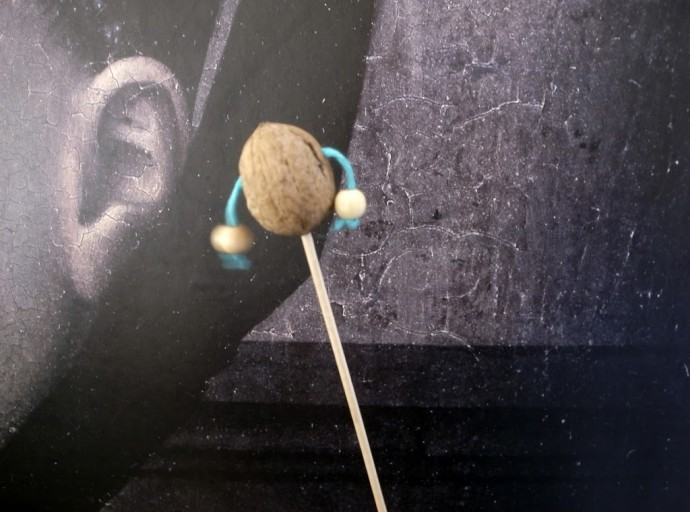

Rattle of nuts.
Nuss Rassel.

Rattle of nuts.
Nuss Rassel.

Cacahuete Un hombre pequeño hecho con cacahuetes capaz de mover sus brazos. Peanut: A little peanut man who can move his arms. Erdnuss: Ein kleiner Erdnuss…
Weiterlesen →
Barco de nuez Probablemente el barco de nuez más pequeño del mundo. Nut boat Probably the smallest nut boat I this world. Nussboot Das wohl kleinste…
Weiterlesen →
Con las cascaras de las nueces (partidas por la mitad) podemos hacer torres. El primero pone una cascara, después el suigiente una encima de la otra...…
Weiterlesen →
Un vale, un mensaje (escrito o dibujado) en una nuez y mandado por correo de ardilla. A bonus or a message (written or drawn) in a…
Weiterlesen →
Duendes de cacahuete Los ayudantes de Papá Noel. Gnom peanut. Santa Claus assistents. Erdnuss Wichtel. Weihnachtsmanns Helfer.
Weiterlesen →
Hecho con muy pocas cosas... y lo mejor: no hace tanto ruido! Solo un pequeño clic clac! Nut music Just a little thing... and the best…
Weiterlesen →